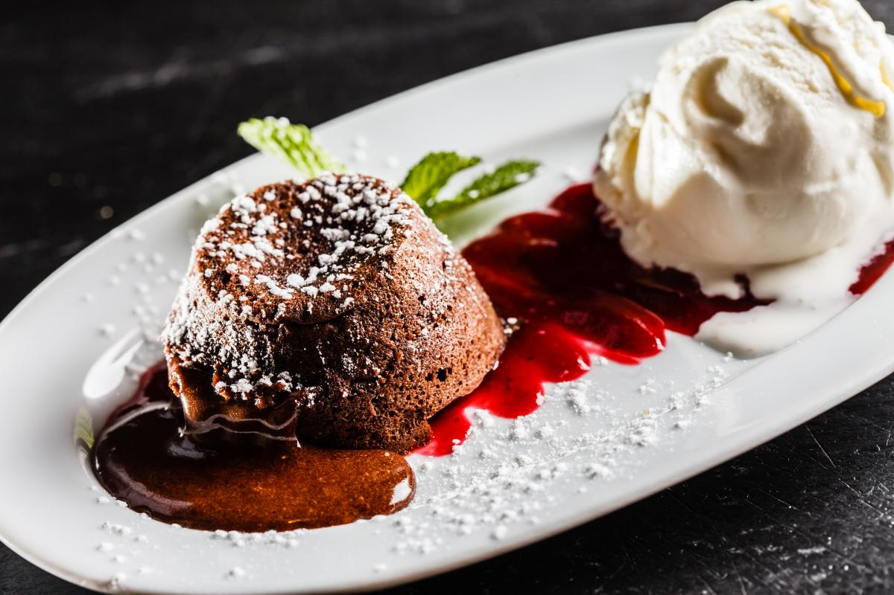

Шоколадний фондан

Інгредієнти
Чорний шоколад (70% какао) – 200 г
Вершкове масло – 100 г
Цукор – 100 г
Яйця – 4 шт.
Борошно – 50 г
Дрібка солі
Ванільний екстракт – 1 ч.л. (за бажанням)
Приготування
Розтоплюємо шоколад і масло:
У мисці на водяній бані розтопіть шоколад разом із вершковим маслом, періодично помішуючи до однорідної маси. Зніміть з вогню та дайте трохи охолонути.
Збиваємо яйця з цукром:
В окремій мисці збийте яйця з цукром до світлої та пишної маси. За бажанням додайте ванільний екстракт.
Змішуємо інгредієнти:
Обережно вмішайте розтоплений шоколад у яєчну суміш. Додайте дрібку солі.
Додаємо борошно:
Просійте борошно та додайте його до шоколадної маси, обережно перемішуючи лопаткою до однорідності.
Розливаємо по формах:
Змастіть вершковим маслом форми для запікання (рамекіни) та присипте їх борошном.
Розлийте тісто у форми, заповнюючи їх на ¾ об'єму.
Випікаємо:
Розігрійте духовку до 200°C.
Випікайте фондан 8–10 хвилин. Краї повинні схопитися, а середина залишитися рідкою.
Подача:
Дістаньте фондан із духовки, дайте постояти 1–2 хвилини, обережно вийміть із форм та подавайте теплим.
Ідеально поєднується з кулькою ванільного морозива чи ягодами.
Смачного! 😋
Додати в обрані
♡
Коментарі
Завантаження коментарів...